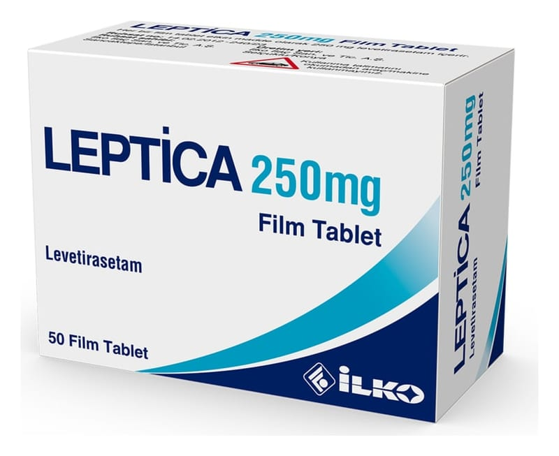

Leptica 250 mg Film Kaplı Tablet, 50 Adet

Ne için kullanılır
KT · Bölüm 1LEPTİCA, mavi renkli, oblong şekilli, çentikli film kaplı tablet şeklindedir. Her kutuda 50 tablet bulunur. LEPTİCA, epilepsi (sara) nöbetlerinin tedavisinde kullanılan antiepileptik (sara nöbetlerini önleyici) bir ilaçtır. LEPTİCA, 16 yaş ve üstü hastalarda ikincil olarak yaygınlaşma olan ya da olmayan kısmi başlangıçlı nöbetlerde tek başına kullanılır. LEPTİCA, halihazırda kullanılan diğer epilepsi ilaçlarına ek olarak: • 4 yaş ve üzerindeki çocuklarda ve erişkinlerde yaygınlaşması olan veya olmayan kısmi başlangıçlı nöbetlerde (sekonder jeneralize olan ya da olmayan parsiyel başlangıçlı nöbetler)
• 12 yaş üzeri adölesan ve erişkinlerde sıçrama tarzındaki nöbetlerde (miyoklonik nöbetler) • 12 yaş ve üzeri adölesan ve erişkinlerde birincil yaygın kasılmalarla giden nöbetlerde (primer jeneralize tonik-klonik nöbetler) kullanılır.